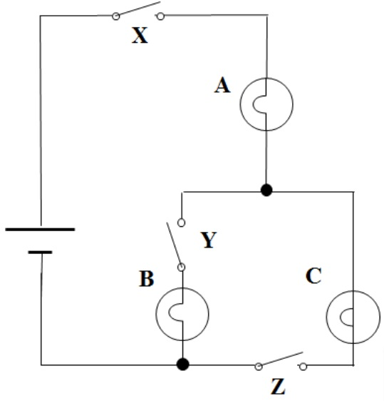

Please choose the answer below that best explains your reasoning.

Switches X and Z need to be closed to close the paths through bulbs A and C. An open switch Y will disconnect bulb B from the battery.
There are three closed paths in the circuits which are controlled by the switches X, Y, and Z. To light bulbs A and C, we need to close switch X and Z, but not Y.
Switch X must be closed to close the path through bulb A. Closing either switch Y or switch Z will light bulb C. However, closing switch Y would also light bulb B.
Switches X and Z need to be closed to close the paths through bulbs A and C. An open switch Y will burn bulb B.
Submit Answer